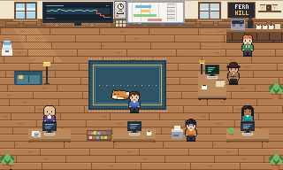

Lifecycle Practice
Practice the judgment calls of lifecycle marketing on screens like the ones you use at work: flow dashboards, a SQL console and an A/B testing tool. Free, in your browser, nothing to install, no account.

The Fernhill officeYour first job at a made-up coffee brand. Pick what you were hired for (analytics, data, testing, or all three), and each workday every desk you're clocked in for gives you the next lesson.Start day 1 →
Or play one game on its own: